| 発売日 | ソフト名 | メーカー | メディア | 技術 | 備考 |
| 1984/08頃? | 忍者・影 | ハドソン アスキー |
ROM 16kB | PSG | 開始時に「影参上！」クリア時に「さらばじゃ！」としゃべります。 |
| 1984/09頃? | インディアンの冒険 | ハドソン アスキー |
ROM 16kB | PSG | カードを取ったときに「どうした、どうした」としゃべります。 |
| 1984/11頃? | ファイヤーレスキュー | ハドソン | ROM 16kB | PSG | 「火事だ！火事だ！助けて！」としゃべります。 |
| 1984/11/21 | スゥーワーサム | 東芝EMI | ROM 32kB | PSG | ColecoVisionという海外のゲーム機からの移植。トーキーズ・シリーズ１とのことですが２以降は不明。穴に落ちると「うわー」と叫ぶ、あとは「Ah...」「Oh, No!」「Ouch!」等としゃべるらしい？ |
| 1984/12頃? | ボスコニアン | ナムコ | ROM 16kB | PSG | |
| 1985/09頃? | プロテクター | PONYCA | ROM 16kB | PSG | 面？をクリアしたときに "アチョー" としゃべります。 |
| 1985/12/21 | ポリスストーリー | PONYCA | ROM 32kB | PSG | 次の部屋に行くときに "アチョー" としゃべります。 |
| 1986/01/22 | レイドック | T&E SOFT | 3.5" 1DD x1 | PSG | |
| 1986/02頃? | ザ・コックピット | ニデコ | ROM 128kB | PSG | 最初に "Get Ready" としゃべります。 |
| 1986/09 | 新世SIZER | コナミ | ROM 32kB | 8bit PCM, DAC搭載 | 音声再生はありませんが、DAC搭載なので一応。 |
| 1986/10/21 | プレイボール | SONY | ROM 32kB | 専用IC (ADPCM) | 専用ICを使ったソフトとしてはこれが初？ |
| 1986/11 | HB-F1 | SONY | MSX2本体 | PSG | 起動時に"Y"と"P"キーを押しっぱなしにしていると、スタッフスクロールが始まり、最後に「It's a SONY!」喋ります。 |
| 1986/11 | 迷宮神話 | HAL研究所 | ROM 128kB | PSG | タイトルで「迷宮神話」としゃべります。 |
| 1986/11 | スーパーランボースペシャル | パック・イン・ビデオ | ROM 128kB | PSG | やられると「うわぁ！」と叫びます。ゲーム中勝手についてくる女兵士が死ぬと，「あっ…」と，ちょっと色っぽい悲鳴をあげます。 |
| 1986/12 | The Black Onix II | BPS/アスキー | ROM 128kB | PSG | タイトル画面で「Search for The fire Crystal」と、いかにもPSGの音声合成っぽくしゃべります。 |
| 1987/03頃? | 雀友 | テクノソフト | ROM 32kB | PSG | 「リーチ！」「ロン！」などとしゃべります。 |
| 1987/04/28 | ウィングマン２ | ENIX | ROM 128kB | PSG | 変身時に"チェイング！"としゃべります。 |
| 1987/04末頃 | DAIVA アスラの血流 (MSX1) | T&E SOFT | ROM 256kB | PSG | WARDATAにLAYDOCKと入れると、スーパーレイドックのデモが始まりしゃべります。 |
| 1987/07頃? | MSX Audio | Panasonic | 専用カートリッジ | Y8950 (ADPCM) | 1988/06頃発売の「エンペラー(皇帝)の女たち」でADPCMを使って音声を再生しているようです。 |
| 1987/07/18 | スーパーレイドック | T&E SOFT | ROM 256kB | PSG | オープニングデモでしゃべります。 |
| 1987/09/21 | ハードボール | SONY | ROM 128kB | 専用IC (ADPCM) | 別スロットにプレイボールを挿入するとプレイボールの専用ICを使ってしゃべります。 |
| 1987/10 | 怒・ＩＫＡＲＩ | SNK | ROM 256kB | PSG | やられると「うわあ！」と叫びます。 |
| 1987/12 | アシュギーネ 虚空の牙城 | T&E SOFT | ROM 256kB | PSG | オープニングデモが流れた後のタイトル画面で「アシュギーネ」と、これまたいかにもPSGの音声合成っぽくしゃべります。 |
| 1987/12頃? | リバイバー | アルシスソフトウェア | 3.5" 2DD x2 | PSG | 開始直後の敵？がしゃべったりします。。 |
| 1988/03上旬 | ダイナマイトボウル | TOEMILAND | ROM 128kB | PSG | MSX(1)版のみ。1987/09/25発売のMSX2版では音声再生しません。 |
| 1988/04/01 | 魔神宮 | ザインソフト | 3.5" 2DD x1 | PSG | タイトル画面で「魔神宮」, 敵エンカウント時に「敵だ！」としゃべります。 |
| 1988/05/25 | 燃えろ!!熱闘野球'88 | ジャレコ | ROM 128kB | 専用IC (ADPCM) | |
| 1987/06上旬 | エンペラー(皇帝)の女たち | オメガシステム | 3.5" 2DDx2 | MSX-AUDIO (ADPCM) | |
| 1988/06上旬 | 一石にかける青春 | ログ | 3.5" 2DDx2 | ボイスボックス（プリンタポートに接続する専用のADPCMハードウェア） | |
| 1988/08頃? | あかんべドラゴン | ウィンキーソフト | 3.5" 2DD x1 | PSG | 戦闘開始時等にしゃべります。 |
| 1988/08下旬 | 亜紀とつかさの不思議の壁 | NEW SYSTEM HOUSE OH! | 3.5" 2DDx2 | PSG | |
| 1988/11/11 | ぎゅわんぶらあ自己中心派 | ゲームアーツ | ROM 256kB | MSX Music | |
| 1988/11/19 | レイドック２ | T&E SOFT | 3.5" 2DD x2 | PSG | |
| 1988/12頃? | とーくまん | エミールソフト | ROM + 3.5" 2DD x1 | 独自PCM | |
| 1989/01/27 | ゴーファーの野望 エピソードII | コナミ | ROM 256kB | SCC | バッドエンディングでヴェノムが笑います。 |
| 1989/02中旬 | 牌の魔術師 | コナミ | ROM 128kB | 8bit PCM, DAC搭載 | |
| 1989/04/21 | ぎゅわんぶらあ自己中心派２ | ゲームアーツ | ROM 256kB | MSX Music | |
| 1989/05上旬 | KUMIKO | NEW SYSTEM HOUSE OH! | 3.5" 2DDx1 | PSG | |
| 1989/05上旬 | NORIKO | NEW SYSTEM HOUSE OH! | 3.5" 2DDx1 | PSG | |
| 1989/05上旬 | KYOKO | NEW SYSTEM HOUSE OH! | 3.5" 2DDx1 | PSG | |
| 1989/08/30 | 激突ペナントレース２ | コナミ | ROM 128kB | SCC | |
| 1989/11/07 | 魔導物語 | COMPILE | 3.5" 2DD x1? | PSG | ディスクステーションSPECIAL クリスマス号(#SP5)に収録。 |
| 1989/11/21 | プロ野球ファミリースタジアム ペナントレース | ナムコ | ROM 256kB | PSG | コンパイルの技術でしゃべりますが、その為テンポが悪くなっています。 |
| 1989/11/24 | アレスタ２ | COMPILE | 3.5" 2DD x3 | PSG | |
| 1989/12中旬 | 妖魔降臨 | 日本デクスタ | 3.5" 2DD x1 | PSG | ボス戦の前に「これで勝ったつもりか！」等しゃべります。 |
| 1990/04/20 | ルーンマスターII | COMPILE | 3.5" 2DD x2 | PSG | |
| 1990/06/15 | 魔導物語1-2-3 | COMPILE | 3.5" 2DD x4 | PSG | |
| 1990/10/15 | FS-A1ST | Panasonic | MSX turbo R本体 | turbo R内蔵PCM | 内蔵ワープロが音声ガイドしてくれます。 |
| 1990/12/06 | FRAY サーク外伝 | マイクロキャビン | 3.5" 2DD x5 | turbo R内蔵PCM | turbo R版のみ。MSX2版では音声再生しません。 |
| 1990/12/14 | フリートコマンダーII | アスキー | ROM 256kB | 8bit PCM, DAC搭載 | 再生できるハードウェアなのに特に何かを再生している様子無し？ |
| 1990/12/23 | シードオブドラゴン | リバーヒルソフト | 3.5" 2DD x3 | turbo R内蔵PCM | オープニングで、FM音源のBGMを流しつつPCMでナレーションがしゃべります。 |
| 1991/10/15 | 笑ゥせぇるすまん | コンパイル | 3.5" 2DD x2 | PSG | 喪黒福造がアニメと同じく「ドーン！」としゃべります。 |
| 1991/11/1 | FS-A1GT | Panasonic | MSX turbo R本体 | turbo R内蔵PCM | 内蔵ワープロが音声ガイドしてくれます。 |
| 1992/05/14 | プリンセスメーカー | マイクロキャビン | 3.5" 2DD x7 | PSG | |
| 2015/04頃? | SD Cartridge - SD Drive + Covox | Repro Factory | SDカードカートリッジ兼Covox | 8bit PCM, DAC搭載 | 最近のハードですが、Covox自体は1986年の規格？のようです。Covoxはジャストサウンドと同じくプリンタポートに接続するDACですが、Covoxの方が古いです。 |
| 2016/04/25 | 只PCM | にがさん | プリンタポート接続DAC | 8bit PCM, DAC搭載 | 大容量メモリの活用方法を考えている時にフリートコマンダーIIにDACが搭載されていることを発見し、思いついたものです。Covoxやジャストサウンドの存在すら知りませんでしたが、偶然なのか安価なソリューションとして必然だったのか、ほぼ同じハードです。 |
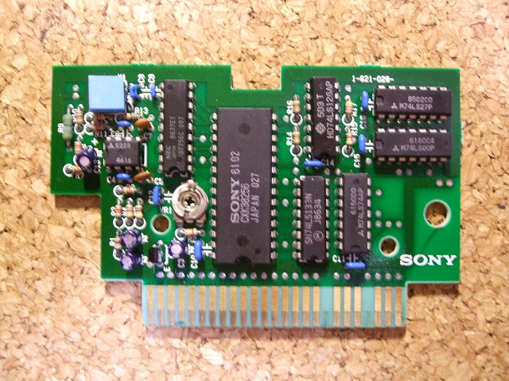
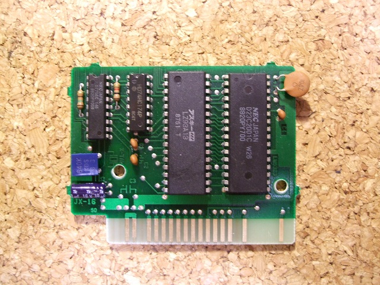
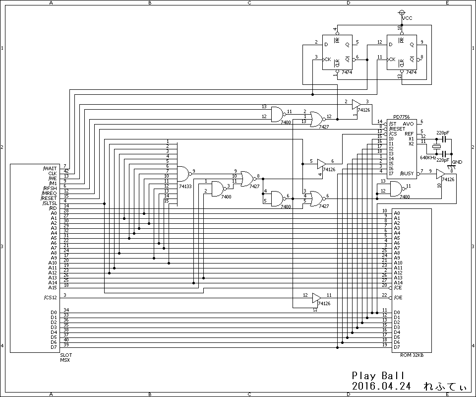
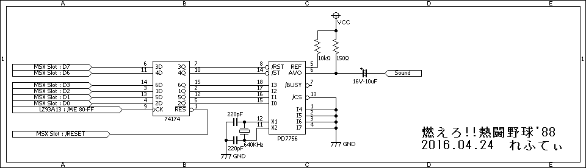
| 発売日 | 機種 | ソフト名 | 型番 | 番号 | Date Code |
| 1986/10/21 | MSX | プレイボール | D7756C | 097 | 8637EY |
| 1987/06/21 | FC | 燃えろ!!プロ野球 | D7756C | 146 | 8722PY |
| 1988/04/15 | FC | 燃えろ!!プロテニス | D7756C | 186 | 8808PY096 |
| 1988/05/25 | MSX2 | 燃えろ!!熱闘野球'88 | D7756C | 146 | 8820PY008 |
| 1988/08/10 | FC | 燃えろ!!プロ野球'88 決定版 | D7756C | 220 | 8924PY008 |
| 1989/07/27 | FC | 新・燃えろ!!プロ野球 | D7756C | 220 | 8909PY014 |
| 1989/11/24 | FC | 寺尾のどすこい大相撲 | D7755C | 052 | 8931X011 |
| 1990/07/27 | FC | 燃えプロ!'90 感動編 | D7756C | 220 | 9026PY026 |
| 1991/11/21 | FC | 燃えプロ最強編 | D7756C | 220 | 9144PY004 |
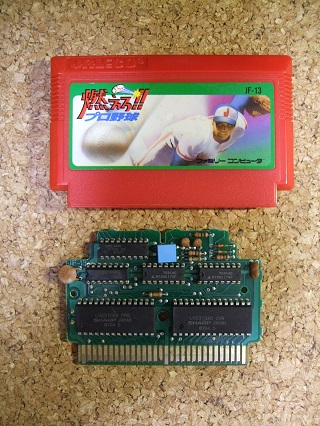
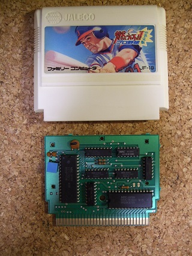
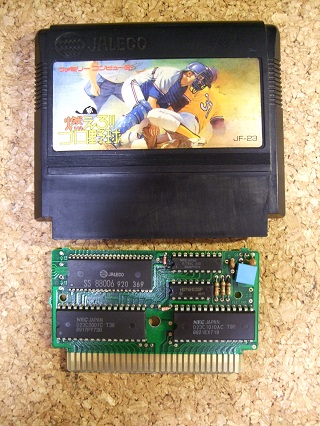
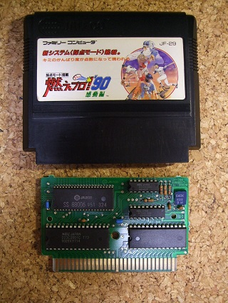
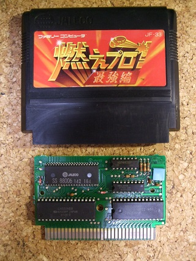
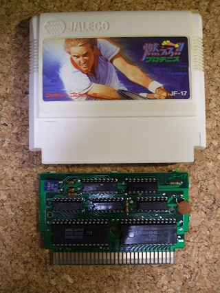
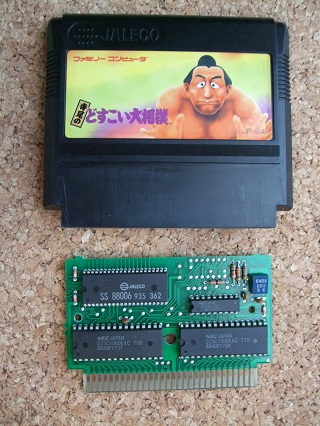
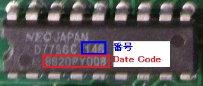
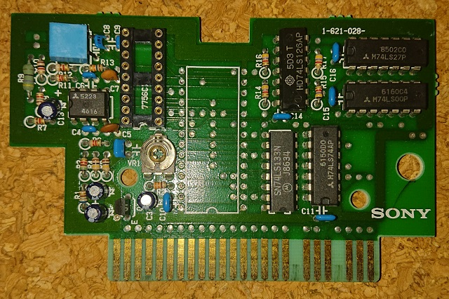
| プレイボール | 燃えろ!!プロ野球 燃えろ!!熱闘野球'88 |
燃えろ!!プロ野球'88 決定版 （及びそれ以降） |
燃えろ!!プロテニス | 寺尾のどすこい大相撲 | |
| IC | D7756C 097 | D7756C 146 | D7756C 220 | D7756C 186 | D7755C 052 |
| #00 | プレイ | ストライク | アウト | ノー (女声) | (拍子木の音？) |
| #01 | ボール | ボール | セーフ | ノー (男声) | はっきょ～い |
| #02 | フォアボール | タイム | ファール | ０ (ラブ) | のこった |
| #03 | セーフ | アウト | フェア | １５ (フィフティーン) | まったなし |
| #04 | アウト | セーフ | ストライク | ３０ (サーティ) | のこった のこった |
| #05 | ストライク | ファール | ボール | ４０ (フォーティ) | まったありません |
| #06 | (打球音) | フェア | タイム | アドバンテージ | - |
| #07 | (キャッチ音) | バッターアウト | バッター | サーバー | - |
| #08 | ゲーム | プレイボール | フォアボール | レシーバー | - |
| #09 | デッドボール | フォアボール | ホームラン | オール | - |
| #0A | イテッ | ホームラン | プレイボール | デュース | - |
| #0B | ビールはいかが～？ | ピッチャー交代 | ピッチャー交代 | ゲーム | - |
| #0C | ノーコン！ | イテッ | 代打 | (打球音) | - |
| #0D | ダイコン！ | アホッ | うぐっ(?) | 歓声 | - |
| #0E | やったー | (打球音) | (打球音) | フォールト | - |
| #0F | - | 歓声 | (キャッチ音(?)) | ネット | - |
| #10 | - | - | (キャッチ音(?)) | アウト | - |
| #11 | - | - | (キャッチ音(?)) | (ぶつかる音(?)) | - |
| #12 | - | - | (キャッチ音(?)) | (ぶつかる音(?)) | - |
| #13 | - | - | 歓声 | - | - |
| 家電のケンちゃん | eBay | 淘宝 #1(仏語) | 淘宝 #2 | 淘宝 #3(中国語) | 淘宝 #4(英語) | 淘宝 #5 | 淘宝 #6 | |
| IC | D7756C 270 | D7756C 223 | D7756C 130 | D7756C 243 | D7756C 340 | D7756AC 046 | D7756AC 058 | D7756AC 074 |
| #00 | 発生 | (*1) | (*2) | れい | ?始 | one | (*3) | (*4) |
| #01 | 火災 | - | - | いっ | 我? | two | - | (ピンポン) |
| #02 | ガス漏れ | - | - | に | 不能控制 | three | (ピンポン) | - |
| #03 | 非常警報 | - | - | さん | ??? | four | (トゥルルルルルル) | - |
| #04 | 侵入警報 | - | - | よん | 一(イー) | five | (プー) | - |
| #05 | 戸締まりを確認してください | - | - | ご | 二(アル) | six | - | - |
| #06 | ボタンを押してください | - | - | ろく | 三(サン) | seven | - | - |
| #07 | 最終 | - | - | なな | (ピー) | eight | - | - |
| #08 | 警備を開始します | - | - | はち | - | niner | - | - |
| #09 | 警備を解除します | - | - | きゅう | - | zero | - | - |
| #0A | - | - | - | 分(ふん) | - | point | - | - |
| #0B | - | - | - | 分(ぷん) | - | youth | 番号をどうぞ | - |
| #0C | - | - | - | です | - | next | 番号 | - |
| #0D | - | - | - | てん | - | - | - | - |
| #0E | - | - | - | 午前 | - | - | - | - |
| #11 | - | - | - | いち | - | - | - | - |
| #12 | - | - | - | ご | - | - | - | - |
| #14 | - | - | - | よ | - | - | - | - |
| #15 | - | - | - | ご | - | - | - | - |
| #16 | - | - | - | ろく | - | - | - | - |
| #17 | - | - | - | なな | - | - | - | - |
| #18 | - | - | - | はち | - | - | - | - |
| #19 | - | - | - | く | - | - | - | - |
| #1A | - | - | - | ぜろ | - | - | - | - |
| #1B | - | - | - | スター | - | - | - | - |
| #1C | - | - | - | シャープ | - | - | - | - |
| #1F | - | - | - | 時 | - | - | - | - |
| #21 | - | - | - | 月 | - | - | - | - |
| #22 | - | - | - | 火 | - | - | - | - |
| #23 | - | - | - | 水 | - | - | - | - |
| #24 | - | - | - | 木 | - | - | - | - |
| #25 | - | - | - | 金 | - | - | - | - |
| #26 | - | - | - | 土 | - | - | - | - |
| #27 | - | - | - | 日 | - | - | - | - |
| #28 | - | - | - | 曜日 | - | - | - | - |
| #2A | - | - | - | じゅう | - | - | - | - |
| #2B | - | - | - | じゅう | - | - | - | - |
| #2C | - | - | - | じゅう | - | - | - | - |
| #2D | - | - | - | じゅっ | - | - | - | - |